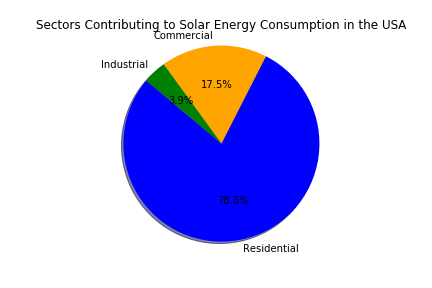
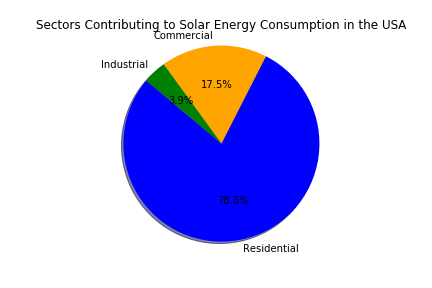

Total energy consumption did not change very much from 2000 - 2015, although there was a dip in conusmption in 2009. The industrial sector makes up approximately half of the total energy consumption.
Total CO2 emissions decreased from 2000 to 2015, with a dip in 2009 which corresponds to the dip in energy consumption. The industrial sector makes up 65% the total CO2 emissions.
 

Total solar energy consumption sharply increased starting in 2009. Opposed to total energy consumption and CO2 emissions, the residential sector makes up nearly 80% the total solar energy consumption.
Regression analysis indicates that total energy consumption account for approximately 50% of the variabiity seen in CO2 emissions. The increased utilization of solar energy and other 'green' energy sources may account for the lack of fit for this regression model.